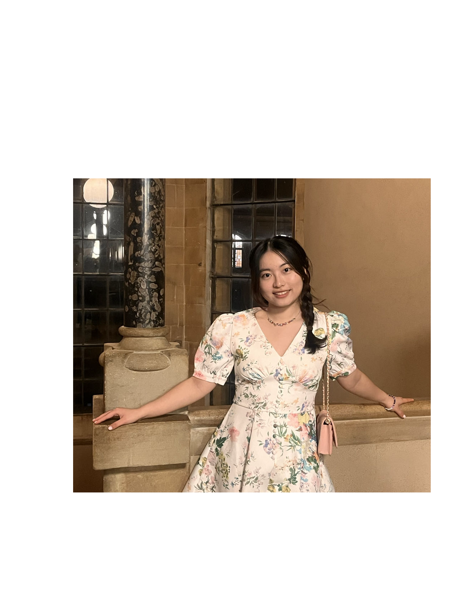

Yixuan (Wendy) Dang
党伊萱
Hi! This is Wendy. I am a PhD student exploring gravitational-wave cosmology at Penn State. I am curious about gravity, astrophysics, philosophy of physics, and also other random questions about reality.
Originally made in Hangzhou (杭州), China, the most beautiful city in the world!
Journal Articles
Monthly Notices of the Royal Astronomical Society, 529(2), 918–925
Random thoughts!